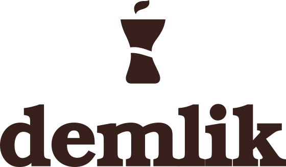
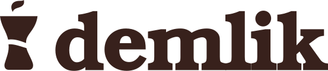
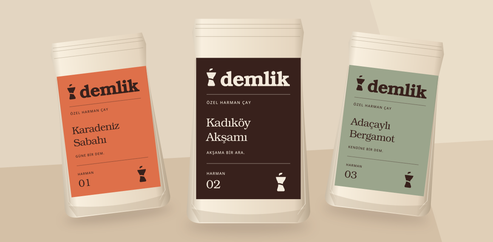
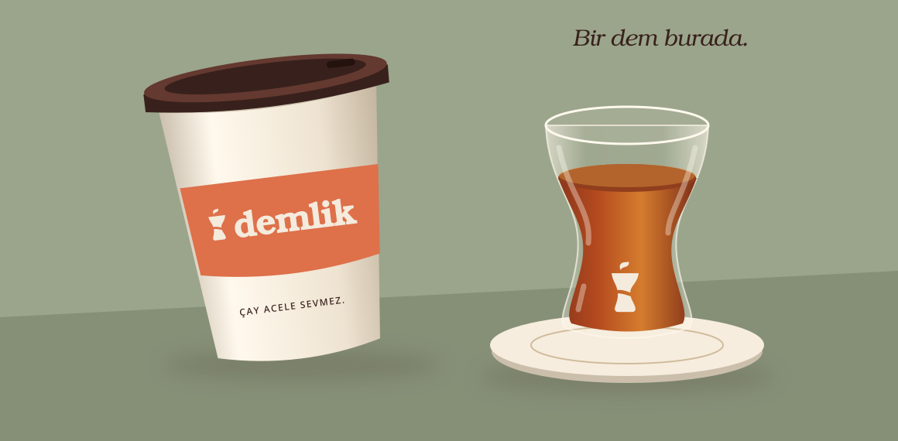
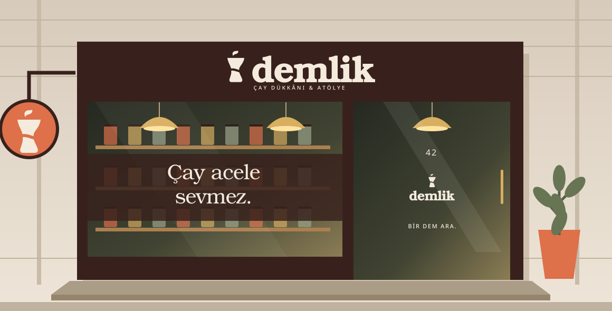
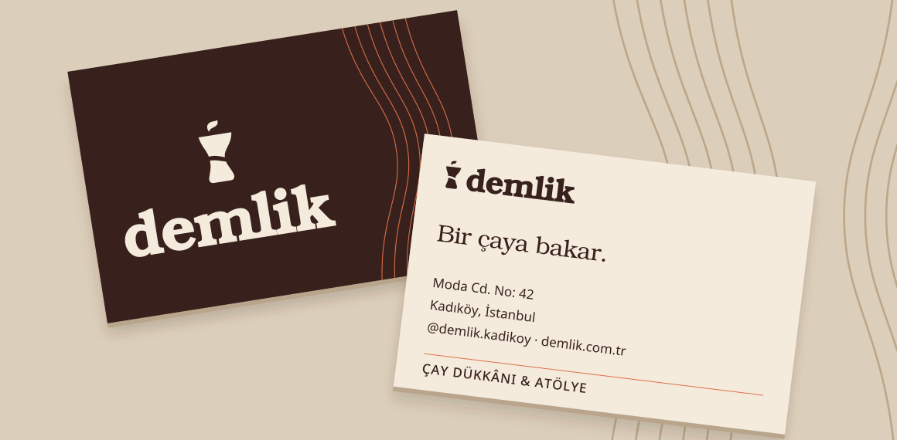
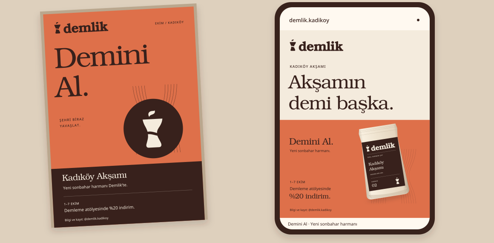

İYİ ÇAY. İYİ ZAMAN.Çay acele
sevmez.
Bir bardaktan
daha fazlası.
Demlik, çayı bir alışkanlıktan merak edilen bir ritüele taşır. Kadıköy’ün gündelik telaşında; iyi harmana, sohbete ve bir şey öğrenmeye ayrılan sıcak bir ara.
Kahvesini tanıyan, şimdi çayını keşfeden şehirliye seslenir. Çayın bilgisini ciddiye alır; kendisini fazla ciddiye almaz.
İnce belli bir hafıza.
Bardak formu ve çay tonları ortak bir hatırayı çağırır. Nostalji, dekor olarak değil tanışıklık hissi olarak kullanılır.
Harmana bir soru.
Özel harmanlar ve cumartesi atölyeleri keşfe davet eder. Bilgi anlaşılırdır; çay uzmanı olmak gerekmez.
Vaktin demini al.
Yumuşak harfler, ferah boşluklar ve küçük espriler aceleyi azaltır. İyi çay bir performans değil, keyiftir.
Bir bardak. Biraz zaman.
İnce bel, kum saati ve yükselen buhar.
Üç çağrışım; tek, yalın işaret.

Bardaktaki açıklık küçük bir nefes aralığıdır. Daralan gövde, demlenmek için gereken zamanı hatırlatır.
Bookman’ın sıcak, tok serifleri özel harf aralıklarıyla bir araya gelir. Küçük harfler samimi bir ses kurar.
Slogan logoya sabitlenmez. Kimlik her ölçekte sade kalır; “Çay acele sevmez.” iletişimde serbestçe yer alır.
Her yere aynı karakter.
Tüm SVG’ler eğrilere dönüştürüldü.
Şeffaf zeminlidir; font gerektirmez.

Tek renk / Kaşe, gravür, tek mürekkep.
Ana, yatay, ikon ve logotip için üç renk seti.

Biraz boşluk iyi gelir.
Oranı, rengi ve nefes alanını koru.
Logoyu her zaman kaynak SVG’den kullan.
İşaretin genişliğinin yarısı x’tir. Logonun görünen dış sınırından her yönde en az x boşluk bırak. Aynı kural ana ve yatay sürüme uygulanır.
Minimum genişlik / dijital · baskı120 px · 30 mm
150 px · 35 mm
24 px · 8 mm
110 px · 25 mm
İkon için dış boşluk: genişliğin ¼’ü. Logotip için: harf yüksekliğinin ½’si. Küçük ölçekte zemin desensiz olmalı.
× Esnetme.
Genişlik ve yüksekliği birlikte ölçekle.
× Döndürme.
Ambalajın fiziksel açısı dışında yatay tut.
× Kontrastı kaybetme.
Adaçayı üzerinde koyu logoyu seç.
× Efekt ekleme.
Gölge, kontur ve degrade kullanma.
Çaydan gelen bir palet.
Ana ilişki: açık Kâğıt + koyu Dem.
Kiremit hareket verir; diğer renkler eşlik eder.
Kâğıt
#F4EBDD
RGB 244 / 235 / 221
CMYK 0 / 4 / 9 / 4
Dem
#38211C
RGB 56 / 33 / 28
CMYK 0 / 41 / 50 / 78
Kiremit
#DE704A
RGB 222 / 112 / 74
CMYK 0 / 50 / 67 / 13
Adaçayı
#9BA58C
RGB 155 / 165 / 140
CMYK 6 / 0 / 15 / 35
Pirinç
#D8AE61
RGB 216 / 174 / 97
CMYK 0 / 19 / 55 / 15
Oranlar genel iletişim için görsel ağırlık önerisidir. Kampanya ve ürün etiketleri kendi vurgu rengini baskın kullanabilir.
CMYK değerleri matematiksel yaklaşıktır.
Nihai profil ve kâğıt için baskı provası gerekir.
Dem / Kâğıt
12.67:1 · Normal metin için AA
Dem / Adaçayı
5.81:1 · Normal metin için AA
Dem / Pirinç
7.24:1 · Normal metin için AA
Dem / Kiremit: 4.65:1; normal metin için AA. Kâğıt / Kiremit: 2.73:1; metinde kullanma, yalnız dekoratif grafik ve logoya ayır. Ürün adları renk dışında ad ve numarayla da ayrılır. Ölçümler WCAG sRGB formülüyledir.
bir zamanı
var.
Aa Bb Cc Çç Ğğ Iı İi Öö Şş Üü
0123456789 & % @
Light / ana başlık · Light Italic / kısa vurgu
Demi / yalnız logotip ve seçili vurgu
İyi çayı tanımak,
bir yudumla başlar.
Özel harmanları keşfet, el yapımı demliklere göz at, cumartesi demleme atölyesinde kendi ritmini bul.
Aa Bb Cc Çç Ğğ Iı İi Öö Şş Üü
0123456789 & % @
56–88 px / 1,08
Harf aralığı −0,03 em
28–36 px / 1,2
Harf aralığı −0,02 em
16–18 px / 1,6
Harf aralığı 0
11–12 px / 1,5
Büyük harfte +0,12 em
Basılı küçük bilgi için en az 8 pt kullan. Uzun metni tamamı büyük harfle dizme. Türkçe büyük harf dönüşümünü koru: “İYİ ÇAY”, “KADIKÖY”.
Dem, çizgi çizgi yayılır.
İşaretin belinden türeyen “dem halkaları”,
kimliğin ikinci tanınma unsurudur.
Simetrik, kesintisiz çizgiler kullan. Desen kenardan taşabilir; eğrileri esnetme. Aralık, çizgi kalınlığının en az 8 katı olsun.
İşaret tek başına büyüyebilir. Küçük logo çoğaltarak doku oluşturma; her yüzeyde bir odak bırak.
Daire, bardak tabağını çağrıştıran yardımcı bir alandır. Kimliğin kalıcı parçası değildir; logoya rozet olarak eklenmez.
Desen metnin altına gelmez. Geniş yüzeylerde %10–20 tonla, kampanyalarda tam renkle kullanılabilir. Çizgi kalınlığı dijitalde en az 1 px, baskıda en az 0,25 mm.
Desen SVG’sini indir ↗
Çayın ciddi.
Sen rahat
ol.
Kısa, sıcak, hafif muzip. Öğretirken üstten bakmaz; satarken bağırmaz. “Sen” der, sohbete yer bırakır.
Sabit marka sözü · Çay acele sevmez.
Davet · Bir çaya bakar.
Kampanya · Demini Al.
“Eşsiz, premium ve benzersiz çay deneyimi.”
“Bildiğin çaya, yeni bir merhaba.”
Sıfat biriktirmek yerine merak uyandır.
“Çay demlemenin tüm sırlarını öğrenin!”
“Cumartesi bir dem öğrenelim.”
Kesin vaatler yerine birlikte keşfetmeye çağır.
“Akşamın demi başka.”
Kadıköy Akşamı geldi. Yeni sonbahar harmanıyla tanış; 1–7 Ekim’de demleme atölyesine %20 indirimle katıl. Bilgi ve kayıt: @demlik.kadikoy
Sağlık vaadi, doğrulanmamış köken ve lezzet notu ekleme. Çayın hikâyesini ürünün gerçek bilgisiyle tamamla.
Üç harman. Bir aile.
Aynı düzen; farklı bir ruh.

01 Karadeniz Sabahı / Kiremit · 02 Kadıköy Akşamı / Dem · 03 Adaçaylı Bergamot / Adaçayı. Renk, ürün adı ve numara birlikte ayırt etmeyi sağlar.
Kadıköy Akşamı etiketi ↗
Ambalaj maketi ve ön etiket tasarımıdır; yasal ürün bilgisi içeren arka etiket değildir.
İçeride, dışarıda, hep Demlik.
Ritüel camda. Hareket kartonda.

Karton bardakta yatay imza; ince belli bardakta tek renk ikon. Kavisli yüzeylerde logoyu ön görüş alanına yerleştir. Cam baskısında opak mürekkep kullan.
Bardak maketi SVG ↗
Ölçüler ve baskı alanı, seçilen bardak ve tedarikçi şablonuyla doğrulanmalıdır.
Mahalleye açılan bir dem.
Moda Cd. No: 42 / Kadıköy

Ana tabelada yatay logo, yaya görüşünde ikonlu asma tabela. Vitrinde tek bir marka cümlesi. Gece aydınlatması sıcak ve homojen; harf kenarlarını ışıkla boğma.
Cephe maketi SVG ↗
Kurgusal cephe görselleştirmesidir; ölçülü mimari uygulama projesi değildir.
Bir çaya bakar.
85 × 55 mm / İki yüz

Ön yüzde kimlik, arka yüzde davet ve iletişim. Öneri: 350 g/m² doğal beyaz, mat ve dokulu karton. Dosyalarda dört yönde 3 mm taşma bulunur.
Kartvizit ön yüz SVG ↗
Net kesim 85 × 55 mm; dosya 91 × 61 mm. Dijital renkler baskı provasıyla eşleştirilir.
Demini Al.
Yeni harman + atölyeye davet

A3 afiş ve 1080 × 1350 px gönderi. Önce davet, sonra Kadıköy Akşamı, en sonda 1–7 Ekim atölye indirimi. Başlıkla teklif aynı anda yarışmaz.
A3 afiş SVG ↗
Kampanya metni brief’e göre hazırlanmıştır. Yıl, seanslar ve indirim koşulları yayın öncesi doğrulanır.
Güzel görünür. Kolay kullanılır.
Dosyaları birlikte tut.
Kit internet bağlantısı olmadan açılır.
| SVGlogo/ | Ana, yatay, ikon, yalın logotip. Her biri Dem, ters Kâğıt ve siyah tek renk: 12 dosya. |
| SVGuygulamalar/ | 5 maket, 3 harman ön etiketi, 2 kartvizit yüzü, A3 kampanya afişi; 4:5 sosyal SVG ve PNG. |
| WEBvarliklar/ | Dem halkaları, yerel WOFF2 fontlar ve lisanslar. Renk değişkenleri: renkler.css |
| DOCKılavuz | kilavuz.html / çevrimdışı, bağlantılı sürüm. kilavuz.pdf / 16 sayfa, yatay sunum. TESLIM.md / açma ve yeniden üretme bilgileri. |
Logolar ve uygulamalar tamamen vektördür. Logo ve uygulama SVG’lerinde yazılar eğrilere dönüştürülmüştür. Düzenlenebilir kaynak kodu kaynak/ klasöründedir.
01 / Doğru logo sürümü, yeterli boşluk ve minimum boyut.
02 / Kâğıt ve mürekkep üzerinde renk provası; matbaanın ICC profiline göre CMYK dönüşümü.
03 / Etiketlerde içerik, net miktar, üretici, parti ve gerekli ürün bilgilerinin tamamlanması.
04 / Afişte 3 mm taşma; bardak, tabela ve ambalajda tedarikçinin kesim/baskı şablonuna uyarlama.
SVG’ler RGB kaynak dosyalardır; PDF kimlik sunumudur. Kartvizit dışındaki uygulamalar kesim şablonu veya baskıya hazır PDF/X değildir. Font lisansları varliklar/lisanslar/ içindedir.
Kılavuzu PDF olarak indir ↗Bir ara,
bir dem.
Moda Cd. No: 42 Kadıköy
@demlik.kadikoy · demlik.com.tr